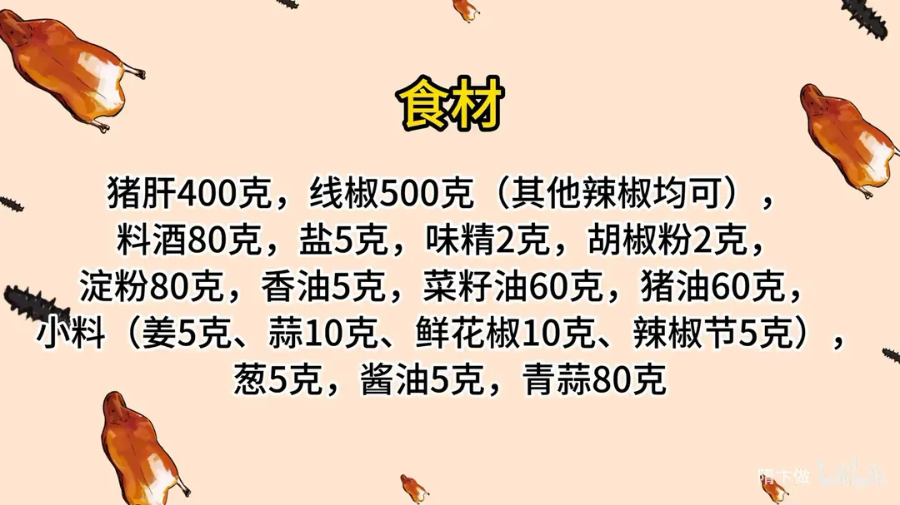
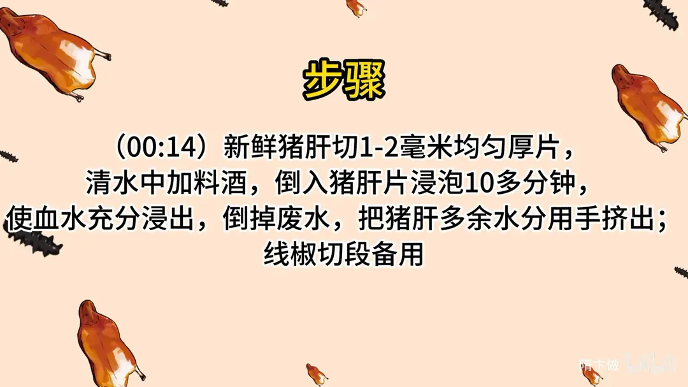
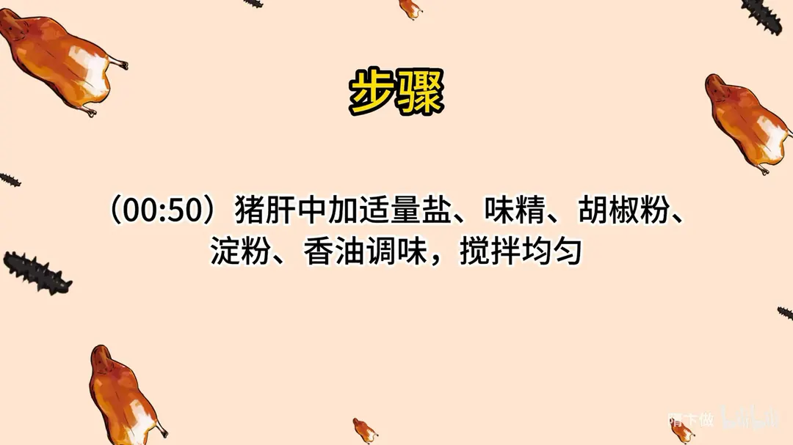
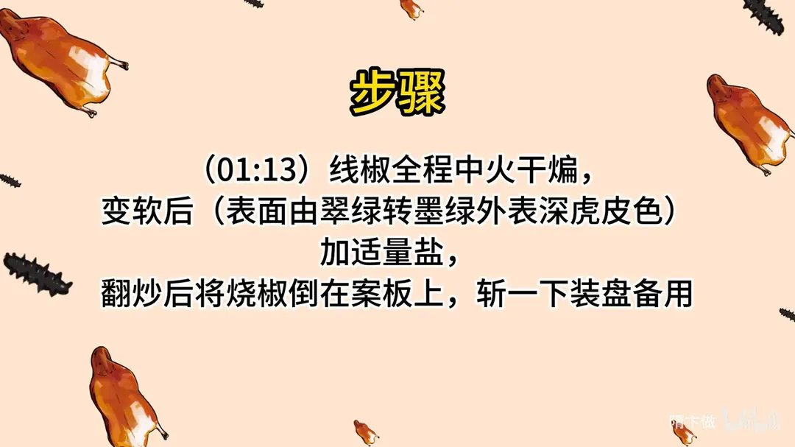
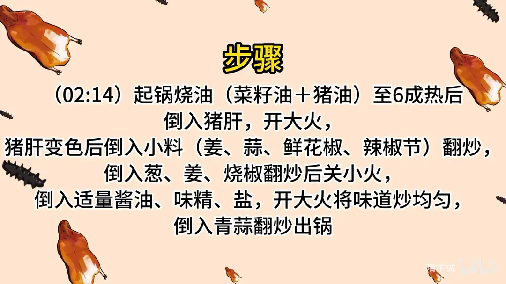

烧椒猪肝
隋卞一做。猪肝 400g 片成 1-2 毫米薄片，用加了料酒的清水泡 10 多分钟逼出血水，挤干后加盐、味精、胡椒粉、淀粉 80g、香油抓匀上浆。线椒 500g 中火干煸到墨绿虎皮色、斩碎装盘；菜籽油与猪油各 60g 烧至 6 成热，猪肝大火滑散后下小料、烧椒合炒，最后青蒜翻锅。
原视频：https://www.bilibili.com/video/BV1784y197Fx
食材
猪肝、线椒 等 17 样
| 类别 | 用料 | 用量 |
|---|---|---|
| 主料 | 猪肝 | 400g |
| 主料 | 线椒（其他辣椒均可） | 500g |
| 腌料 | 料酒 | 80g |
| 腌料 | 盐 | 5g |
| 腌料 | 味精 | 2g |
| 腌料 | 胡椒粉 | 2g |
| 腌料 | 淀粉 | 80g |
| 腌料 | 香油 | 5g |
| 小料 | 姜 | 5g |
| 小料 | 蒜 | 10g |
| 小料 | 鲜花椒 | 10g |
| 小料 | 辣椒节 | 5g |
| 小料 | 葱 | 5g |
| 调料 | 酱油 | 5g |
| 配料 | 青蒜 | 80g |
| 其他 | 菜籽油 | 60g |
| 其他 | 猪油 | 60g |
步骤
- 切片切段：新鲜猪肝切 1-2 毫米均匀厚片；线椒切段备用。
- 泡出血水：清水中加料酒，倒入猪肝片浸泡 10 多分钟，使血水充分浸出；倒掉废水，把猪肝多余水分用手挤出。
- 上浆调味：猪肝中加适量盐、味精、胡椒粉、淀粉、香油调味，搅拌均匀。
- 烧椒：线椒全程中火干煸，变软后表面由翠绿转墨绿、外皮呈深虎皮色；加适量盐，翻炒后将烧椒倒在案板上，斩一下装盘备用。
- 滑猪肝：起锅烧油（菜籽油加猪油）至 6 成热后倒入猪肝，开大火；猪肝变色后倒入小料（姜、蒜、鲜花椒、辣椒节）翻炒。
- 合炒出锅：倒入葱、姜、烧椒翻炒后关小火，倒入适量酱油、味精、盐，再开大火将味道炒均匀，倒入青蒜翻炒出锅。
讲解要点
难度：★★☆☆☆（猪肝熟得快，难在切片均匀、上浆和滑油的火候）
为什么这么做
- 切 1-2 毫米、薄厚均匀：厚薄一致才能一块熟，薄的先老、厚的还生。
- 清水加料酒泡 10 多分钟，泡完攥干再上浆：泡出血液减腥、颜色变白；水分不挤掉，浆就挂不住，下锅一出水就脱浆。
- 淀粉只上薄薄一层白浆，腌时再拌点香油：浆是保住猪肝里的水分，浆厚了下锅粘连、吃着糊嘴；香油去腥增香，滑油时香气先出来。
- 线椒不放油干煸、全程中火：先把辣椒表面的水分煸掉，香味才释放；火大了外皮焦黑、里面还硬，中火虽慢但不出错。
- 煸到变软、墨绿、虎皮均匀：虎皮就是辣椒表皮焦化的那层香，也是「烧椒」这个味的来源。
- 菜籽油配猪油：这是最香的组合，猪油给脂香，菜籽油耐高温。
- 六成热下猪肝，变色后立刻倒小料；调味时关小火、再开大火炒匀：猪肝熟得快，多炒几秒就老；小料这时下，香气正好被猪肝的油带出来；小火免得糊锅，大火把味颠匀。
容易翻车
- 片得太厚或不匀，外面老了里面还生。
- 血水没泡净、水分没攥干，下锅出水，腥且发黑。
- 淀粉上厚，滑油时粘成一坨。
- 油温不够就下猪肝，浆掉了，肉变柴。
- 烧椒火太大，外皮焦苦、里面还生。
热评补充
- 有观众问能不能先炒小料、再下猪肝：可以，先把姜蒜、鲜花椒、辣椒节炒香再下猪肝，香气更足；代价是猪肝多炒一会儿容易老，动作要更快。
原片尾卡





原片文案
AI 字幕校准稿
重庆第一天视频一发，我这私信就爆了，你们真是太喜欢这道菜了。回北京第一天我就连夜做了一遍，今天把这个交给你们——烧椒猪肝。
买新鲜的猪肝，我来切片，切薄薄的厚片，一到两毫米吧，切得薄厚均匀一些，这就能一块熟。清水里面倒上点料酒，把切好的猪肝片倒里边。泡完之后，第一，血水泡出来了，腥味就减少了；第二，颜色会变白一些，炒出来也更好看。
没买到四川那种很正宗的辣椒，我们今天用线椒，中间切一刀，一会儿好煸。泡的时候用手抓一抓，让血水充分融到水里面；泡完拿手攥一攥，多余的水分全部挤出去。
然后猪肝里面加味，放点底口，加点盐、味精、胡椒粉，充分搅拌均匀。加点玉米淀粉，表面有一层白颜色的淀粉就可以了，这一步主要是上一层薄薄的浆，保持猪肝里面的水分。来点香油，去腥增香。
下一步烧椒。锅里不用放油，把辣椒倒进去干煸，拿勺子在锅里扒拉它，边扒拉边按，主要是把辣椒表面的水分去掉，释放出更多的香味来。其实在家里什么辣椒都行，粗的细的、大的小的、辣的不辣的，您自己都可以选，主要吃的就是烧椒那个味。
表面现在有一些少量的虎皮状了，还得要变。这一步不是很好做，在家的话全程中火就行了，虽然有点慢，但是不会出错。一定要把这个辣椒煸软、煸成虎皮状，按一下，让它的接触面大一点，你看这虎皮状就更漂亮了。
刚开始下锅还是脆的，炒着炒着就变成墨绿色了，外表这种焦糊状态特别均匀，也变软了。这时候少放点盐，翻炒一下就可以出锅，倒在案板上斩一下装盘。
起锅烧油，菜籽油加猪油，这也是最香的；家里实在没有猪油，用别的油也行。油烧到六成热，把猪肝倒进去，不用老扒拉，让猪肝变色。变色之后立马把小料倒进去——姜蒜、鲜花椒、辣椒节，把它炒香，小料的味全部释放出来，然后再放点葱。下料要狠。
把烧椒倒进去，关小火，来少量的酱油、味精、盐，再开大火把味道炒均匀，定个味，把青蒜倒里边，翻两下出锅。
味儿绝了，挺下饭的。猪肝还是有口感，烧椒那个味道最大程度都出来了，但是它不苦，猪肝的香、烧椒的辣、蒜苗的脆，还有葱姜蒜的味道，这一口能干半碗饭。
不过咱这个下手还是比重庆的轻了，这是为了照顾大多数人的口味。如果你们完全想做重庆那个味道，就得把辣椒稍微再炕苦一点，味精还要再多加一倍，那个味儿就很香了。